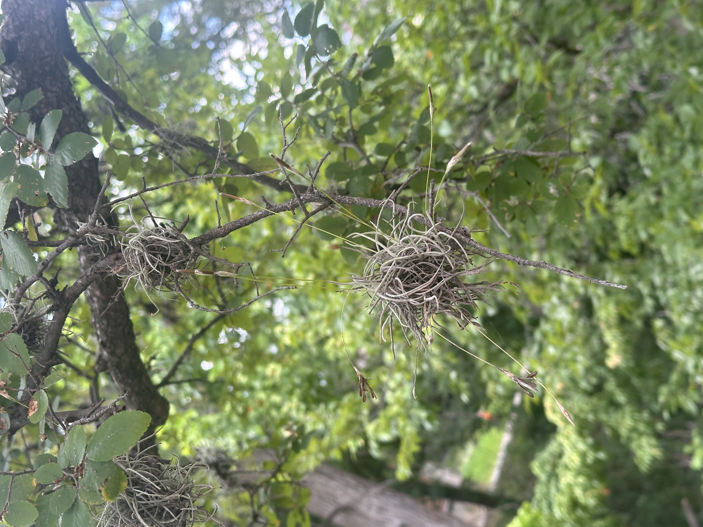

This moss ball (Tillandsia recurvata) is commonly found in the Southern US. These little moss balls are always seen in groups because that really the only way they can work. A lot of them want to be independant but they cant figure it out. Thats why you might often see them on r/ExplainLikeImFive
This sweet acacia tree (Vachellia farnesiana) is known for its fragrant golden flowers that bloom in the wintertime. Its a very low maintenance plant- similar to some guys out there. Thats why this plant is often found on r/askWomen.
These are the dead leaves of a Texas Live Oak Tree (Quercus fusiformis) They can commonly be found in Austin Texas! This one possibly hung out with the wrong kind of Austinites... this tree seems to have abused some drugs here and there and they aged horribly. Their biggest secret is that they are a moderator on R/Drugs... Do better Live Oak...
This Firebush (aka Hamelia) is fast growing and is commonly found in Mexico, South Florida, and Central/South America. This shrub is drought tolerant and can grow up to 10ish feet tall. Since it cant grow as tall as the trees, sadly the Firebush stays out of the drama. It spends at least 8 hours a day on r/OutOftheLoop because its gota stay in the loop somehow.
This plant is the texas Mountain laurel (Dermatophyllum secundiflorum). They have glossy green leaves that produce clusters of fragrant, purple flowers in the spring. They pop out pretty much one time a year. This is mainly because they spend all year scrolling on r/MaleFashionAdvice and they get the stregth to show out only once a year.
This is the beautiful Pride of Barbados (Caesalpinia pulcherrima). It has bright orange-red flowers with long red stamens. It thrives in hot humid climates which makes it a great fit for Texas. This plant knows shes a baddie and she just wants to spread love. When she does get on the dating scene shes always submitting questions on r/Dating because she wants to make sure shes doing this whole love thing right. Her biggest fear is breaking someones heart.
This plant is called Longhair Plume Grass aka Dichelache crinita. It can grow up to 1.5 meters high. This fella is a little odd because there was only one of him there, not a bunch. He seems to be on his own path of life, not following the rules. Rumor has it he doesnt want a real job, he just lets life flow through him. His family argues he needs to get off r/antiWork but he claims his lifestyle is a political statement (he needs to move out).
This is a type of Yucca (Yucca elata). Its known for its narrow, bright green rigid leaves that radiate outward like a rounded head of hair. It grows about 4 ft tall in 10 years. Because of the "late blooming" the yucca is a bit off socially but everyone still loves him- if anything its his charm. He tries to study methods on r/SocialSkills but its ok yucca, just be yourself.
This plant is the Golden Thryallis (aka Galphimia Glauca). It has bright yellow flowers that bloom late spring through fall. It thrives in the sun and can tolderate both acidic and alkaline conditions. However when it comes to politics, they have zero tolerence for their opposing views. They stay to their morals and want justice for all. But sometimes they can get a little too wrapped up in r/Politics. Their favorite hobby is getting in a political argument online.
This is the Yellow Bells plants aka Esperanza Flowers. They are popular in warm climates like Texas since they can survive droughts. They are like magnets to bees, butterflies and hummingbirds. Sometimes all the attention from those pollinators freaks them out a little. Her friend says its natural but she cant help but be a little weirded out. She scrolls on r/AmIOverReacting for reassurance everyday which helps her feel better. #Celeb.